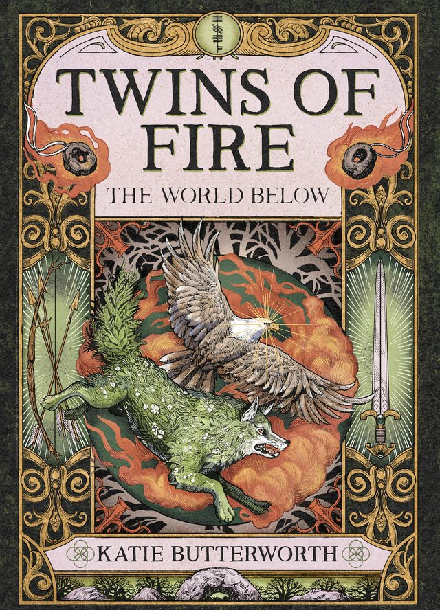
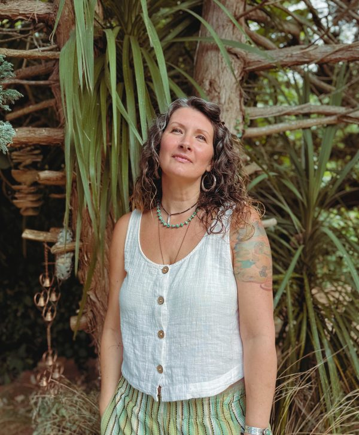

Welcome to The World Below

Ella and Kal are ordinary. Or so they've spent their entire lives believing.
Until the morning of their sixteenth birthday. Their parents reveal a truth that shatters everything they know, placing weapons forged for them into their hands. Strange abilities awaken, and the life they thought they knew begins to unravel.
Beneath their world lies another: a hidden realm where the creatures and beings of Celtic mythology are real, ancient magic endures, and forgotten legends breathe. Here, being a twin means something far more powerful than they ever imagined.
The pen behind the pages
I write YA fantasy that draws on the myths, folklore and landscapes of the British Isles, from my Devon roots and my Scottish Celtic heritage.
Twins of Fire was inspired by my own twins and the bond they share.
I don't have a writing room. The stories get written wherever the ideas find me: on the sofa with my laptop, in notebooks while I wait in the car after school or clubs, and out in the woods. I'm a pantser. I follow the characters to see where they lead.
I live in South Devon with my husband and our twins. When I'm not writing I'm usually on a woodland path or searching the Devon coast for the next piece of The World Below.

Come and find me
ScribeFest, Christmas Edition. Sedgebrook Hall, Northamptonshire.
Join the newsletter for book news, folklore and first looks: katiebutterworth.com. Or find me on Instagram and TikTok.